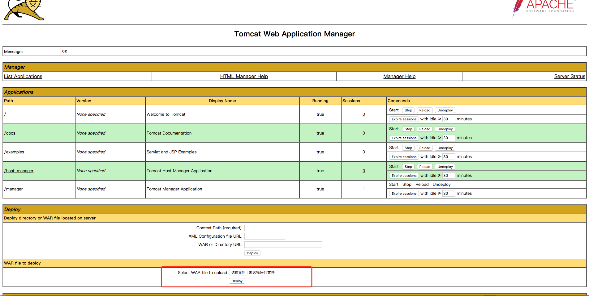

Tomcat7+ 弱口令 && 后台getshell漏洞¶
Tomcat版本：8.0
环境说明¶
Tomcat支持在后台部署war文件，可以直接将webshell部署到web目录下。其中，欲访问后台，需要对应用户有相应权限。
Tomcat7+权限分为：
- manager（后台管理）
- manager-gui 拥有html页面权限
- manager-status 拥有查看status的权限
- manager-script 拥有text接口的权限，和status权限
- manager-jmx 拥有jmx权限，和status权限
- host-manager（虚拟主机管理）
- admin-gui 拥有html页面权限
- admin-script 拥有text接口权限
这些权限的究竟有什么作用，详情阅读 http://tomcat.apache.org/tomcat-8.5-doc/manager-howto.html
在conf/tomcat-users.xml文件中配置用户的权限：
<?xml version="1.0" encoding="UTF-8"?>
<tomcat-users xmlns="http://tomcat.apache.org/xml"
xmlns:xsi="http://www.w3.org/2001/XMLSchema-instance"
xsi:schemaLocation="http://tomcat.apache.org/xml tomcat-users.xsd"
version="1.0">
<role rolename="manager-gui"/>
<role rolename="manager-script"/>
<role rolename="manager-jmx"/>
<role rolename="manager-status"/>
<role rolename="admin-gui"/>
<role rolename="admin-script"/>
<user username="tomcat" password="tomcat" roles="manager-gui,manager-script,manager-jmx,manager-status,admin-gui,admin-script" />
</tomcat-users>
可见，用户tomcat拥有上述所有权限，密码是tomcat。
正常安装的情况下，tomcat8中默认没有任何用户，且manager页面只允许本地IP访问。只有管理员手工修改了这些属性的情况下，才可以进行攻击。
漏洞测试¶
无需编译，直接启动整个环境：
docker compose up -d
打开tomcat管理页面http://your-ip:8080/manager/html，输入弱密码tomcat:tomcat，即可访问后台：

上传war包即可直接getshell。